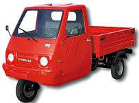

|
Yerli
kamyonet Maya deneme sürüþüne çýktý:
Altýnboða
Holding, bir yýldýr sürdürdüðü çalýþmanýn ardýndan Maya isimli
bir kamyonet üretti. Motoru hariç bütün parçalarý yerli olan
Maya, 3 silindir dizel motorla çalýþýyor ve benzerlerinden
dörtte üç daha az yakýt sarf ediyor.
Altýnboða
Holding tarafýndan sessiz sedasýz bir çalýþma sonucu üretilen
yerli kamyonetin test sürüþü baþarýyla gerçekleþtirildi. Altýnboða
Holding' in sahibi Oktay Demirað, bir senedir üzerinde çalýþtýðý
ve Maya adýný verdiði kamyonetin ilk deneme sürüþünü baþarýyla
gerçekleþtirdi ve onun için kurban kesti. Demirað, aracýn
motor hariç bütün parçalarýnýn Türkiye'de üretildiðini ifade
etti. 3 silindir dizel motorla çalýþan ve 700 kg yük taþýma
kapasitesine sahip kamyonet akaryakýt tasarrufu ile dikkat
çekiyor.
Aracýn
motorlarýný saðlayan Japon motor firmasý Kubota için de bir
ilk gerçekleþiyor. Kubota bugüne kadar sadece iþ makineleri
için motor üretirken bundan böyle Altýnboða için otomobil
motorlarý üretimine de geçmiþ olacak.
"Kriz ortamýnda araç sürücülerimize en uygun araba modeli
üzerinde çalýþtýk. Benzeri bir kamyonetin 20 milyonluk benzinle
alacaðý yolu 5 milyonluk mazotla alacak olan Maya'yý geliþtirdik.
Aracýn en büyük özelliði yedek parça sorunu olmayýþý."
þeklinde konuþan Oktay Demirað, üç tekerlekli arabalarýn üretme
iznini alabilmek için uzun yýllar mücadele vermiþti. Yerli
triporter denilen üç tekerlekli arabalardan sonra dört tekerlekli
kamyonet üretimine baþlayacak olan Altýnboða Holding, jeep
üzerinde de çalýþmalarýný yoðunlaþtýrdý.
Þanzýmaný,
þasesi ve kasasýnýn yerli olarak üretildiði Maya'nýn monoblok
olarak yapýlmadýðýný ifade eden Demirað, "Bu nedenle
araba kazadan sonra hurdaya çýkmayacak." þeklinde konuþtu.
Kapý, þasi ve kabinin ayrý olarak
yapýldýðý arabalardan Türkiye'nin 100 bin adet ihtiyacý olduðu
ve 15-20 senede çürümeyecek bir teknoloji ile yapýldýðý belirtiliyor.
Arabaya Türk milletine has bir ürün ve görünüm kazandýrýldýðýný
belirten Demirað þöyle
dedi: "Arabayý hazýrlarken halkla bütünleþmesini, halkýn
bu araçtan en ucuz þartlarda faydalanmasýný düþündük."
Demirað, Türkiye'ye ekonomik olarak da katký saðlayacak olan
bu arabanýn bir dönem yapýlan ve ilk yerli oto olarak lanse
edilen Anadol'dan farkýný þu sözlerle açýkladý: "Anadol,
Ýngiltere'de yapýldý, burada monte edildi. Ama Maya tamamýyla
Türkiye'de üretilecek, Türk iþçisi ve mühendisinin eseri olacak."
Sanayi
ve Ticaret Bakanlýðý'nýn yerli arabadan memnun olduðunu ve
kendilerine yardýmcý olduðunu ifade eden Demirað, "Þimdiye
kadar böyle bir giriþim olsaydý, bugün milyonlarca dolar yurtdýþýna
gitmezdi. Bu krizi yaþamazdýk. Bu aracý Türkiye'nin yaný sýra
Irak, Afganistan ve Ortadoðu'da üreteceðiz. Kýrklareli'nde
bir fabrikamýz yapýlýyor. Orada seri üretime geçeceðiz."
þeklinde konuþtu.
MAYA
teknik özellikleri:
Altýnboða, Türkiye' de ilk defa motor hariç þanzýman, diferansiyel,
þase, kabin ve diðer yan sanayi parçalarýnýn üretimini kendi
bünyesinde toplayarak uzun yýllarýn birikimi ve tecrübesi
ile MAYA' yý üretmiþ bulunmaktadýr.
ALTINBOÐA'
nýn MAYA' da geliþtirmiþ olduðu ve yüklü vaziyette olsa dahi
sürgülü kasa sistemi sayesinde kolayca açýlýp motor bakýmý
yapabilme özelliði dünyada sadece MAYA' da bulunmaktadýr.
Patent No: a19980147
MAYA,
sürücünün konforu düþünülerek dizayn edilmiþtir. Kullanýmý
kolaydýr. Her üç tekerlekte de mevcut olan hidrolik fren sistemi
sürücünün emniyetini güvence altýna alýr. Geliþtirilmiþ manevra
kabiliyeti dar ve zor yollarda sürüþ kolaylýðý saðlar. MAYA'
nýn kabin, kasa ve güçlü þase sistemi çürüme ve paslanmaya
karþý son derece dayanýklýdýr. Makaslý ve hidrolik amortisörlü
olmasý, aðýr yük ve yol þartlarýnda emsallerinden üstün performans
sergilemesini saðlar.
MAYA'
da dünyanýn en güçlü, en ekonomik, sessiz ve çevre dostu KUBOTA
motoru kullanýlmýþtýr. KUBOTA motorlarýnda verim daha fazla,
yakýt tüketimi diðer motorlara oranla % 5 - % 10 daha azdýr.
Ofset piston ve kartelin arttýrýlan sertliði sayesinde ses
düzeyi inanýlmaz oranda düþüktür.
Egzost gazýnýn içindeki toksit maddelerin yüzdesel oraný yeni
TVCS sistemi sayesinde önemli þekilde azalmýþtýr. Kubota motorlarý
CARBULGE standartlarýnýn çok altýnda çürük gaz atýðý verir.
Daha
fazla bilgi için:
www.altinboga.com/holding.htm
www.otoyedekparcadergisi.com/haber/detay.asp?id=260
Renault, Türkiye'den 400 bin yeni Megane ihraç edecek:
Renault,
yeni Megane'ý üretecek üç ülkeden birisi olarak Türkiye'yi
belirledi. Fransýz þirket, Megane II adýyla pazara sunulan
aracýn 4 kapýlý Sedan modelinin sadece Bursa'da üretilmesine
karar verdi.
Renault
Baþkaný ve CEO'su Louis Schweitzer, 2,1 milyar Euro yatýrýmla
geliþtirilen x84 projesi kapsamýnda, 75 ülkede 5,5 milyon
adet Megane II satýþý öngördüklerini ve Türkiye'de üretilecek
600 bin Sedan modelinin üçte
ikisinin ihraç edileceðini açýkladý.
Fransa
ve Ýspanya'daki fabrikalarda baþlayan Megane II üretimi Türkiye'de
2003 yýlýnda baþlayacak. Renault yetkilileri üretimin tam
tarihiyle ilgili bilgi vermekten kaçýndý. Avrupa'da ekim ayýnda
satýþa çýkacak olan Megane II modelleri Türkiye'de Mart 2003'ten
itibaren yollara çýkabilecek. Megane'ýn renkleri arasýna 'Osmanlý
Mavisi' de eklendi.
Renault'nun
yeni üretim projesiyle birlikte daha önce sadece Türkiye'de
üretilen Megane Wagon modeli tamamen Ýspanya'ya kaydýrýlýyor.
Böylece Türkiye fabrikasýna Megane'ýn bir modeli býrakýlmýþ
oluyor.
|